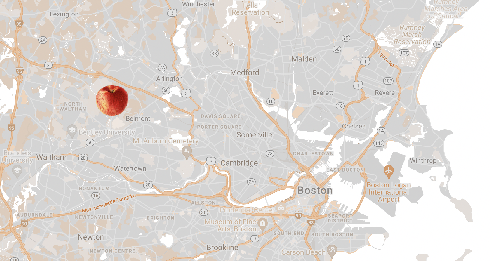

Directions to Queen Orchards

Find us at: 248 Mill St, Belmont, MA 02478
Arriving From Boston
- Make your way onto I-90 West
- take exit 127
- in 0.6 miles use the left two lanes to turn onto Main Street
- in 0.5 miles turn right onto Waverly Avenue
- in 0.7 miles turn left onto Trapelo Road
- in 0.4 miles turn right onto Mill Street
- in 0.7 miles take a left into our parking lot
Arriving From Western Mass
- Make your way onto Route 2 East
- take exit 131 and merge onto Winter Street
- in 1.3 miles take a left onto Concord Ave
- in 0.1 miles take a slight left onto Mill Street
- in 0.2 miles take a right into our parking lot